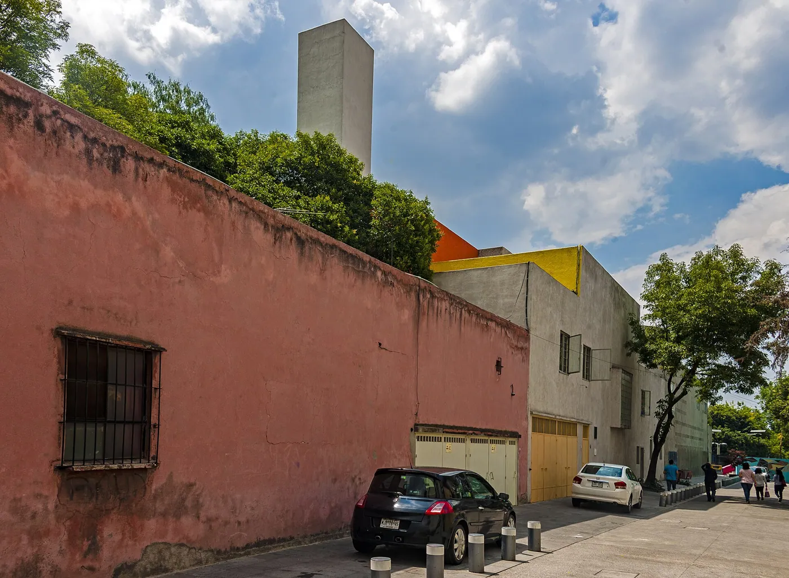
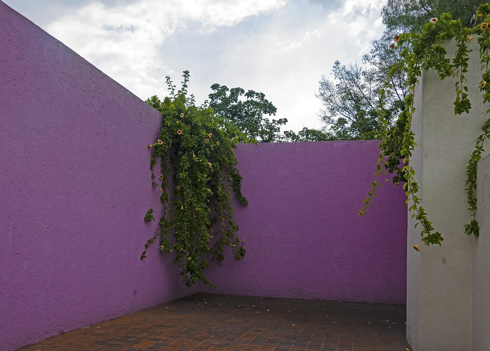
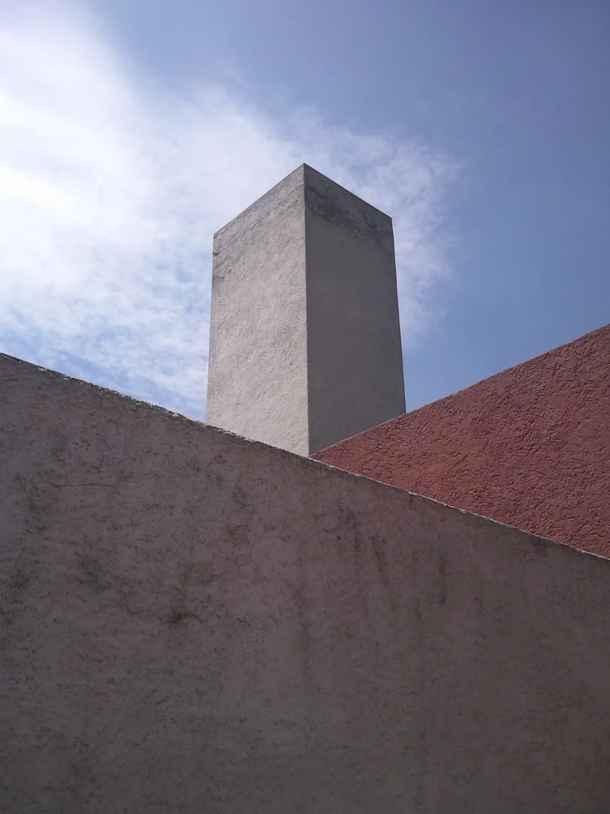

1/8 · Exterior · Luis Barragán House and Studio (Mexico)Photo: Francesco Bandarin · CC BY-SA 3.0 igo · source

2/8 · Exterior · View toward Luis Barragán House and Studio looking north along Calle General Francisco RamirezPhoto: Daniel Case · CC BY-SA 3.0 · source

3/8 · ExteriorPhoto: Daniel Case · CC BY-SA 3.0 · source4/8 · Interior · Luis Barragán House and Studio (Mexico)Photo: Francesco Bandarin · CC BY-SA 3.0 igo · source5/8 · Context · Luis Barragán House and Studio, the view from the gardenPhoto: Ymblanter · CC BY-SA 3.0 · source6/8 · Detail · Luis Barragán House and Studio (Mexico)Photo: Francesco Bandarin · CC BY-SA 3.0 igo · source7/8 · DetailPhoto: Daniel Case · CC BY-SA 3.0 · source

8/8 · Exterior · Casa Barragan-Torre del aguaPhoto: JavierDo · CC BY-SA 3.0 · source